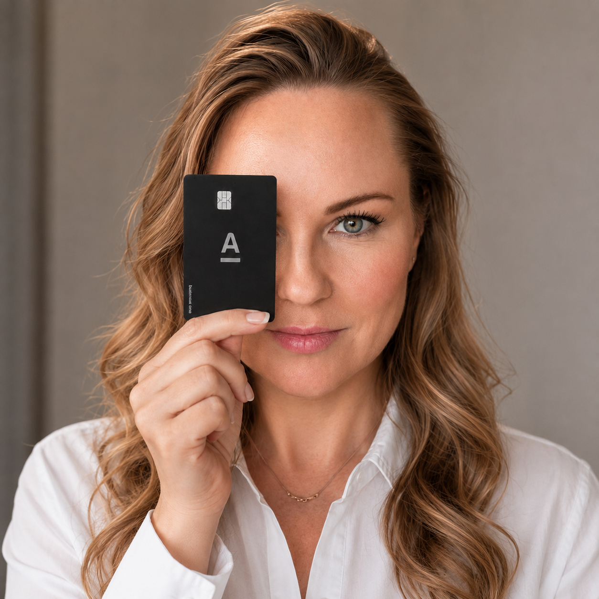
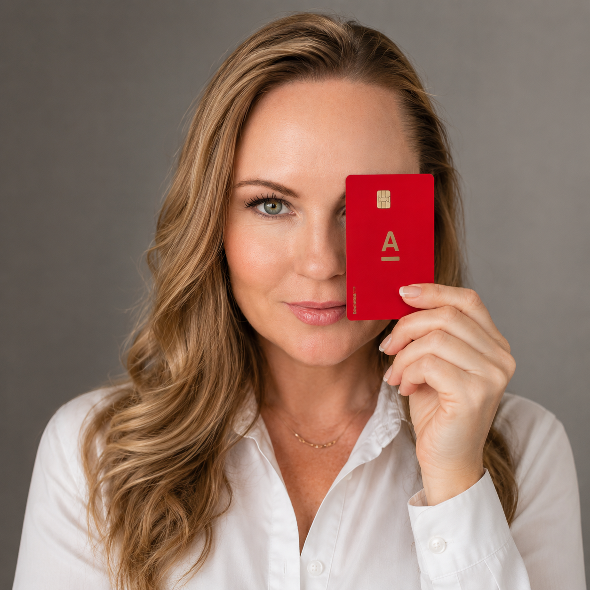
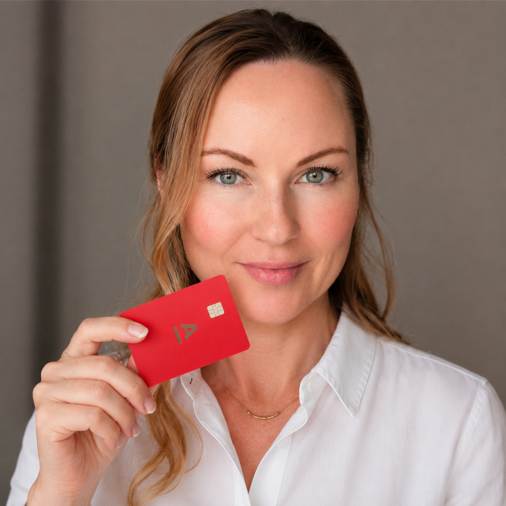

Выгодные продукты 🔥
Выбирай продукт и забирай свою выгоду

Бизнес-карта для самозанятых и ИП
До 7 000 ₽ бонусами
10% кэшбэка в пяти выбранных категориях и еженедельные акции с кэшбэком до 100%.
Подробнее
Карту можно оформить, если ты уже ИП или самозанятый. Если нужного статуса ещё нет, я подскажу, как оформить всё бесплатно и получить дополнительный бонус.
Например: первое пополнение карты — 1 000 ₽, первая покупка — 1 000 ₽, открытие накопительного счёта — 500 ₽ и другие простые задания.
Примерно 3 500–4 000 ₽ получаем моментально. Остальные бонусы начисляются в течение месяца после выполнения заданий. После оформления я дам список заданий, чтобы получить максимум.
Лимит — до 15 000 ₽ кэшбэка в месяц.
Бывают акции с полным возвратом расходов, например на ЖКХ или покупки у партнёров.
Первые 3 месяца бесплатно, далее 249 ₽ в месяц.
Сколько занимает оформление
Если ИП уже есть:
заявка — около 10 минут, встреча с курьером —
около 20 минут. Курьер привезёт тебе карту.
Если ты самозанятый:
оформление может занять до трёх дней.
Нужны две встречи с курьером: первая —
для регистрации специального режима,
вторая — для открытия счёта.
За регистрацию через меня есть специальный бонус — 2 000 ₽.

Кредитная карта Альфа-Банка
Бесплатная навсегда
Снимай наличные без комиссии, не плати за них проценты до 100 дней и получай кэшбэк рублями.
Подробнее
Кредитные карты есть почти у всех. Но далеко не каждая позволяет снимать наличные без комиссии, не платить за эти деньги проценты до 100 дней и получать кэшбэк рублями.
В Альфа-Банке можно оформить несколько кредитных карт на одного человека. Поэтому, даже если у тебя уже есть кредитная карта Альфа-Банка, можно оформить ещё одну и получить преимущества и бонус от меня.
Что ты получаешь
Льготный период действует на покупки и снятие наличных.
Можно снимать до 50 000 ₽ в месяц без комиссии. И самое важное — на эту сумму тоже действует льготный период.
Такие условия встречаются крайне редко. Обычно банки берут комиссию за снятие наличных и сразу начинают начислять проценты.
По стандартным категориям можно вернуть до 60 000 ₽ в год. Если не пропускать акции и специальные предложения, выгода будет выше.
Я подсказываю, какие предложения действительно выгодны, где искать повышенный кэшбэк и как использовать карту с пользой.
Закрыть кредитку другого банка
С помощью этой карты можно закрыть кредитку другого банка и получить до 100 дней без процентов.
По сути, ты освобождаешь себя от процентов ещё на несколько месяцев и получаешь время спокойно закрыть долг.
Бонус от меня
Первую покупку на сумму 1 000 ₽ ты фактически получаешь в подарок — я верну тебе 1 000 ₽.
Закрытый клуб
После оформления карты ты попадаешь в мой закрытый клуб, где проходят розыгрыши, публикуются выгодные акции и дополнительные предложения.
Почему эта карта отличается
Обычная кредитка — это просто деньги в долг с льготным периодом.
Карта Альфа-Банка может заменить дорогую кредитку другого банка и дать до 100 дней без процентов, позволяет снимать наличные без комиссии и возвращать часть расходов рублями.
Перед оформлением проверь актуальные тарифы, лимиты, льготный период и условия начисления кэшбэка на странице банка.

Дебетовая Альфа-Карта с особым тарифом «Для своих»
1 000 ₽ в подарок за первую покупку
Бесплатная карта навсегда с гарантированным кэшбэком на продукты, доставку, кафе и фастфуд, бензин, одежду, обувь, ЖКХ и другие повседневные расходы.
Подробнее
Карта, которая возвращает деньги за повседневные траты
Мы всё равно покупаем продукты, оплачиваем коммунальные услуги, заказываем доставку, ходим в кафе и заправляем автомобиль.
Разница лишь в том, сколько денег после этих покупок вернётся обратно.
Что ты получаешь
Оплачивай коммунальные услуги в приложении или Альфа-Онлайн и возвращай часть расходов.
При заказе карты ты сам выбираешь подходящие категории: продукты, бензин, аптеки, кафе и рестораны, фастфуд, одежду, обувь, красоту, детские товары и другие привычные расходы.
Несколько раз в месяц в приложении мы крутим особый барабан суперкэшбэка и получаем дополнительный кэшбэк — до 100%.
Повышенный кэшбэк у партнёров
Тебе будут доступны специальные предложения от партнёров:
Мой результат
За два года наша семья вернула более 300 000 ₽ кэшбэком с трёх карт.
После оформления ты попадёшь в мой закрытый клиентский чат, где я подробно рассказываю, как использовать акции, где искать повышенный кэшбэк и как возвращать больше денег с обычных покупок.
В чате также проходят бесплатные ежемесячные розыгрыши.
Подарок от меня — 1 000 ₽
Оформи карту по моей ссылке и соверши первую покупку на сумму от 1 000 ₽.
Кому доступен особый тариф
Особый тариф «Для своих» доступен новым клиентам банка, а также действующим клиентам, которые более двух лет не совершали операций в банке.
Забрать карту с подарком Задать мне вопросКатегории, проценты, лимиты и партнёрские предложения могут обновляться. Актуальные условия проверяй перед покупкой в приложении или на странице банка.